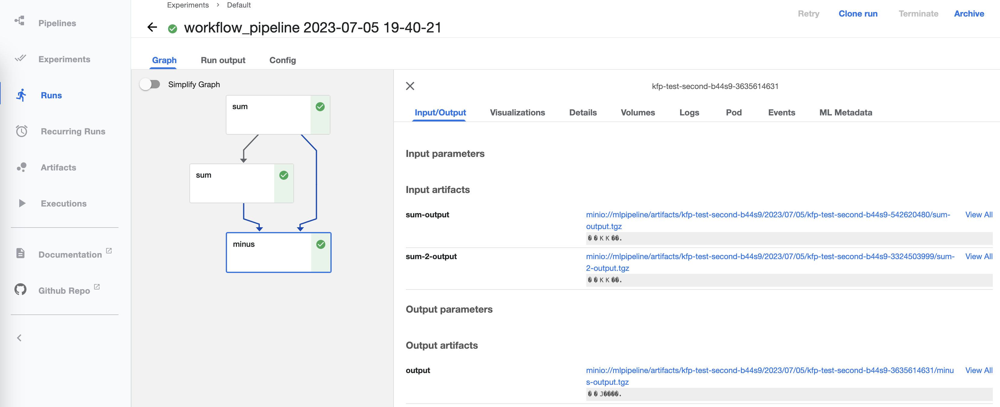
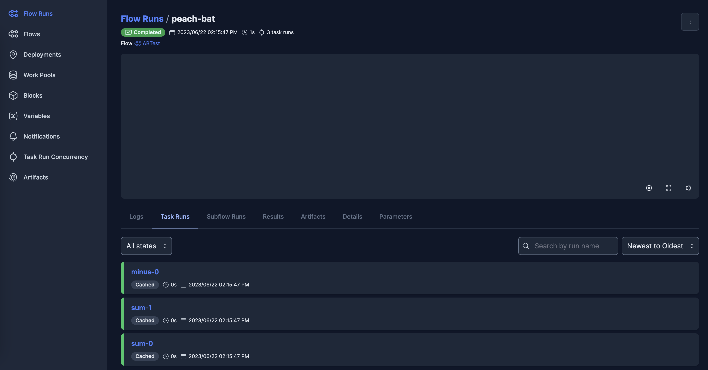

Introduction and quick start
The package Function Fuse is designed to build programming workflows in the form of direct acyclic graphs (DAG). The nodes of the DAG are functions defined by a user. The programming model of Function Fuse is inspired by CodeFlare, which is now a part of Ray.io (Ray Workflows).
Why another workflow package
There are hundreds of workflow packages out there (see this repo for instance for a list). Our goal is to create a minimal workflow package usable by research scientists and machine learning engineers without a heavy background in software engineering.
We follow these concepts:
Split workflow engines into seperated frontend and backend layers.
The frontend layer is developed by Research Scientists.
In the frontend layer the workflow is defined with a single Python decorator, and a command to set DAG node names.
The backend layer is developed by Software Engineers (SWEs).
Backend layers can provide arbitrary functionality: query nodes by their names, edit the pipeline, assign resources to nodes, etc..
The frontend-backend separation enables a researcher or scientist to write and maintain backend-agnostic code. Software engineers can write backends to run workflow DAGs on popular distributed libraries, e.g. Ray, Ray Workflow, Prefect, Kubeflow Pipelines, etc.. The separation allows exactly the same frontned code to run without changes on different distributed libraries and cloud environments.
Benefits:
Simple for development (separation of research-SWE code).
Extreme flexibility. The exact same workflow code can be run using multiple backends.
Pipeline editing: dynamic insertion of the nodes, node collapsing, etc. by backends.
Plugins: intialization of environment before execution of DAG nodes by backends such as initialization of random number generator during parallel and distributed execution.
Cloud engine backends.
Resilience: the backend can provide storage options to save intermediate results and DAG execution restart.
In practice, one more meta-layer is used for communication of required resources between researchers and engineers, e.g., in JSON format. However, we currently do not provide an example of this.
The frontend
Only two directives are implemented in the frontend layer:
@workflowdecorator for user functions (alias@taskcan also be used).set_name()function that assigns a name to a node of the DAG.
from functionfuse import workflow
@workflow
def sum(a, b):
return a + b
@workflow
def multiply(a, b):
return a * b
a, b = 1, 1
a_plus_b = sum(a, b).set_name("node1")
a_plus_two_b = sum(a_plus_b, b).set_name("node2")
result_of_mult = multiply(a_plus_b, a_plus_two_b).set_name("node3")
The above code defines a graph with 3 nodes: node1, node2, node3:
The variables a_plus_b, a_plus_two_b, and result_of_mult contain references to the nodes.
To run a DAG, we need one of the backends.
Backends
Backend layers take as an input one or several nodes of the graph and run the workflow.
There are two types of backends, built-in and addons. Built-ins are implemented entirely in the Function Fuse package, whereas addons leverage other existing workflow libraries that might help manage or run workflows.
Two built-in backends to Function Fuse package are designed to run workflow in-serial locally (Local Workflow), or in-parallel with Ray (Ray Workflow).
There are currently 3 addon backends. KFP Workflow uses the KubeflowPipelines SDK to deploy a Function Fuse DAG to run Nodes in containers on a Kubernetes/OpenShift cluster. Prefect Workflow uses the Prefect python ecosystem to orchestrate running the workflow, and is an example of interfacing Function Fuse with a popular existing workflow package that provides a variety of different options out of the box that could be useful for users of Function Fuse. Ray Workflow Workflow uses the Workflow components of the Ray (CodeFlare) package directly. These addon backends are all in an alpha stage of development and serve for demonstration purposes as an example for writing new backends based on existing libraries.
Backends classes typically take workflow name to use in the data storage class. Here is an example of backend setup and run for the above workflow.
from functionfuse.backends.builtin.localback import LocalWorkflow
from functionfuse.storage import storage_factory
local_workflow = LocalWorkflow(result_of_mult, workflow_name="operations")
opt = {
"kind": "file",
"options": {
"path": "storage"
}
}
storage = storage_factory(opt)
local_workflow.set_storage(storage)
_ = local_workflow.run()
Addon backends can provide access to any features of existing packages, such as systems for tracking previous workflows and runs, and interactive dashboards - the images below show the same frontend run in the dashboards for Kubeflow (left) and Prefect (right):
 {kind=link}
{kind=link}
Graph visualization
Backends can potentially be used for visualization and analysis - we have implemented one example of a backend for visualizing the Nodes in a DAG:
from functionfuse.backends.builtin.graphback import GraphWorkflow
graph_workflow = GraphWorkflow(result_of_mult,
workflow_name="plot_graph",
doc_path='.')
graph_workflow.run()
{kind=link}
Storage and Analysis
Intermediate execution of graph nodes can be saved to storage to restart execution, or for further analysis and visualization of results in e.g. Jupyter notebooks by loading workflow results.
To read the data, we recreate the same storage object in a notebook:
from functionfuse.storage import storage_factory
the_workflow_name = "classifier"
storage_path = "storage"
opt = {
"kind": "file",
"options": {
"path": storage_path
}
}
storage = storage_factory(opt)
To list existing saved node results:
all_tasks = storage.list_tasks(workflow_name=the_workflow_name, pattern="*")
print("All graph node names: ", all_tasks)
list_tasks returns the list of node names. To read specific saved node
results (task) we use read_task:
nodel_result = storage.read_task(workflow_name=the_workflow_name, task_name="node2")
Queries
CodeFlare and other workflow packages assign different attributes to nodes of DAGs. For instance, CodeFlare sets Ray resources for execution of functions remotely. However, the frontend does not support such functionality. Instead, attributes of nodes are set in the backend. In the backend, we query nodes by their names, assign different attributes and perform operations on selected nodes. An example is setting resources for Ray Workflow backend:
ray_workflow.query(pattern="^model$").set_remote_args({"num_cpus": 1, "resources": {"_model": 1}})
Here, we query nodes using RegExp pattern and assing resources to all nodes that match the pattern. In many cases the frontend designer is aware that certain resources are required for node execution (e.g. GPUs), and may provide a map of node names to resource types to guide resource assignment in the backend.
Serializers
Backends can make use of different types of storage, including local file systems, storage assigned to specific remote machines in a Ray server using Ray custom resources, or we have implemented access to S3 storage. Certain types of object might require different methods of serialization and deserialization. For that, we have included the ability to add custom Serializers to backend storage. For example, currently we have implemented a serializer for Dask Arrays that facilitates access to large arrays using distributed files such as HDF5 or Zarr.
Stateful Nodes
To make stateful nodes, we apply the @workflow decorator to classes. Nodes
can be arguments of constructors and methods of decorated clasess:
from functionfuse import workflow
@workflow
class IncrementalSum:
def __init__(self, start):
self.start = start
def add(self, n):
self.start += n
return self.start
@workflow
def minus(a, b):
return a - b
one = minus(4, 3).set_name("four_minus_three")
incremental_sum = IncrementalSum(start = one).set_name("IncrementalSum")
two = minus(3, one).set_name("three_minus_one")
incremental_sum.add(two).set_name("one_plus_two")
incremental_sum.add(two).set_name("three_plus_two")
six = incremental_sum.add(one).set_name("five_plus_one")
result = minus(six, 2).set_name("six_minus_two")
The above code defines a graph with 7 nodes:

Note that edges between methods of the same class instance are generated automatically to produce a chain of sequentially called methods.